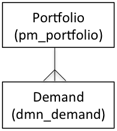
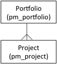
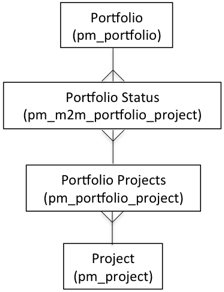

Project Portfolio Management
| |
Note: This article applies to Fuji and earlier releases. For more current information, see Portfolio Management at http://docs.servicenow.com
The ServiceNow Wiki is no longer being updated. Visit http://docs.servicenow.com for the latest product documentation. |
Contents
1 Overview
A portfolio is a collection of related projects. Portfolios also include demands starting with the Fuji release. Create a portfolio to measure the progress of several projects at the same time and to create multi-project reports for analysis. A read-only portfolio Gantt chart is available to view all projects in a portfolio.
2 Creating a Portfolio
You can create a new portfolio from either the Project Management or the Demand Management applications.
2.1 Creating a Portfolio in the Fuji Release
- Navigate to one of the following:
- Demand > Settings > Portfolios
- Project > Settings > Portfolios
- Click the New button.
- Enter a unique Name that summarizes the projects and demands included in this portfolio.
- Enter a Description for the portfolio that adequately explains the various projects and demands attached to it.
- Click Create Portfolio.
{kind=link}
| Field | Description | |
|---|---|---|
| Name | The name of the portfolio. | |
| Description | A detailed description of the portfolio that summarizes the included projects and demands. | |
| Related Links | ||
| Demand Workbench | Opens the demand workbench. | |
| Portfolio Status | Displays the Portfolio Status list. These project views are typically used for reporting purposes to add the view to a portfolio dashboard. Project views are often associated with an actual project record and contain some of the same data, such as the planned start and end dates.
For Eureka and prior releases, you can create a project view that is not associated with any project and use the project view for reporting purposes only. You might want to do this if you are using another tool, such as Microsoft Project, to manage the project but you still want to include the project as part of a portfolio dashboard. Project views do not appear on the the project portfolio Gantt chart. The Portfolio Status related link replaces the Portfolio view related list starting with the Fuji release. To create a new project view, click this related link and then click New on the Portfolio Project form. | |
| Portfolio Gantt Chart | Displays a Gantt chart with a summary of the portfolio's projects and milestones. | |
| Related Lists | ||
| Demands | Lists the demands included in the portfolio. Click the New button to create a new demand. Click the Edit button to add existing demands to the portfolio. | |
| Projects | Lists the projects included in the portfolio. Click the New button to create a new project. Click the Edit button to add existing projects to the portfolio. | |
2.2 Creating a Portfolio in Eureka and Prior Releases
To create a new portfolio:
- Navigate to Project > Portfolios > Create New.
- Configure the following fields:
- Name: Select a unique name that summarizes the projects included.
- Category: Select one of the following categories:
- Transform business
- Grow business
- Run business
- Active: Select this check box to enable this portfolio. Only active portfolios appear in the list of available gauges for a homepage.
- State: Select one of the following states: Define, Analyze, Approve, and Charter.
- Description: Provide a detailed enough description of this portfolio to explain the various projects attached to it.
- Click Create Portfolio.
3 Projects and Demands in a Portfolio
Any project or demand can be added to a portfolio. The Portfolio form contains these related lists:
- Demands: (starting with the Fuji release) Demands that you create in the demand application with records in the Demand [dmn_demand] table. All demands in this related list are part of the portfolio.
- Demands are associated to a portfolio in a 1:m relationship, where one portfolio is associated to m demands.
- 
{kind=link}
- Projects: Projects that you create in the project application with records in the Project [pm_project] table. All projects in this related list are part of the portfolio.
- Starting with the Fuji release, projects are associated to a portfolio in a 1:m relationship, where one portfolio is associated to m projects.
- 
{kind=link}
- Project view: (Eureka and prior releases) Views of projects that you create only from the Portfolio form. These project views are used for reporting purposes to add the view to a portfolio dashboard. Project views are often associated with an actual project record and contain some of the same data, such as the planned start and end dates. However, you can create a project view that is not associated with any project and use the project view. You might want to do this if you are using another tool, such as Microsoft Project, to manage the project but you still want to include the project as part of a portfolio dashboard. Project views do not appear on the the project portfolio Gantt chart. The Project view related list has been replaced by the Project Status related link starting with the Fuji release.
| |
Note: In the v2 application, a project view without an associated project is called an unattached project. |
- A project record can be associated to multiple portfolio project records and any changes to the project propagate to the associated portfolio projects. Portfolio Status is a many-to-many relationship between the Portfolio Projects [pm_portfolio_project] and Portfolio [pm_portfolio] tables. Project is related to Portfolio through the Portfolio Projects and Portfolio Status tables as displayed in the following diagram.
- 
{kind=link}
The method of adding the project to a portfolio differs between the v2 and v3 applications. In the v2 application, you can add any existing project to the Projects related list. This action automatically creates associated project view. Starting with the v3 application, you must manually create a project view first and associate it with an existing project. After you save the project view, the project is added to the Projects related list and becomes part of the portfolio. The Portfolio field on the Project form is also populated with the portfolio name.
3.1 Adding Existing Projects to a Portfolio
In the v2 application:
- Navigate to the Portfolio form.
- In the Projects related list, click Edit.
- Select the projects from the Collection column and add them to the Project List column.
- Click Save.
- The Project application creates a new record in the Portfolio Project table and adds this record to the Portfolio View related list.
In the v3 application in the Dublin release, the Project related list is read only. To add an existing project to a portfolio:
- Navigate to the Portfolio form.
- In the Project View related list, click New.
- Fill out the form specifying the existing project in the Project field.
- Click Save.
- Just as with the v2 application, the Project application creates a new record in the Portfolio Project table and adds this record to the Portfolio View related list. It also adds the project to the Projects related list, making that project part of the portfolio.
In the v3 application in the Eureka release, you must still add the project to the Project View related list in order to add the project to the portfolio itself. However, when you create a new project, the Project application automatically creates a new record in the Portfolio Project table as well. To add the project to a portfolio:
- Navigate to the Portfolio form.
- In the Project View related list, click Edit.
- Select the project from the Collection column and add it to the Project List column.
- Click Save.
3.2 Adding Existing Demands to a Portfolio
- Navigate to the Portfolio form.
- In the Demands related list, click Edit.
- Select the demand from the Collection column and add it to the Demands List column.
- Click Save.
3.3 Creating an Unattached Project in the v2 Application
To add a project to the Project view related list in the v2 application:
- Navigate to the Portfolio form.
- Under Related Links, click Create Unattached Project. The Portfolio Project form opens.
- The Portfolio Project form does not populate any data at the top of the form because it is not linked to a record in the Project table.
- Configure the project details, such as planned start dates and effort, at the top of the form.
3.4 Creating a Project View
- Navigate to the Portfolio form.
- Open the desired portfolio.
- Click the Portfolio Status related link to open the Portfolio Status list.
- Click New.
- Fill in the fields on the Portfolio Project form, as appropriate (see table).
- Click Submit.
| Field | Description |
|---|---|
| Project | The name of the project. |
| Short description | A brief description of the project. |
| Notes | Any additional notes pertaining to this project. |
| Planned start date | The intended date the project should begin. |
| Planned end date | The intended date the project should finish. |
| Risk | The level of risk for this project.
|
| Scope | Whether or not the project is still in scope. If the project scope has expanded and might impact project, select yellow or red.
|
| Cost | The estimated cost of this project. If the project cost has grown and might impact the project, select yellow or red.
|
| ROI % | The return on investment for this project. |
| % Complete | The percentage complete, which is copied from the Project record. |
| % Complete target | Where the project should currently be, based on its percentage complete. |
| Active | If the portfolio dashboard is active. |
| Portfolio Dashboard Fields | Description |
| Update Dashboard | Option to update the fields in this section with the values from the top part of the form. Click this button to update the fields. |
| Risk | The level of risk for this project. |
| Risk comment | Any additional comments pertaining to the risk. |
| Scope | The scope status for this project. |
| Scope comment | Any additional comments pertaining to the scope. |
| Cost | The cost status for this project. |
| Cost comment | Any additional comments pertaining to the cost. |
| ROI % | The return on investment for this project. |
| ROI comment | Any additional comments pertaining to the return on investment. |
| % Complete | The percentage complete |
| % Complete comment | Any additional comments pertaining to the % complete. |
4 The Project Portfolio Gantt Chart
Use the project portfolio Gantt chart to assess the progress of projects within a portfolio. The Gantt chart is similar to the project Gantt chart, but is read-only. The start and finish date for each project are shown in relationship to other projects. Each project is represented as a horizontal bar that is proportional to the project's duration. Project milestones appear as colored dots on the chart: completed milestones in black, missed milestones in red, and milestones that are on track in green.
- Navigate to the Portfolio form.
- Under Related Links, click Portfolio Gantt Chart.
- Alternatively, from the Portfolio List, right-click a portfolio name and select Portfolio Gantt Chart.
{kind=link}
To synchronize the portfolio view with the data in the portfolio project records, click the Refresh Portfolio related link in the Portfolio record.